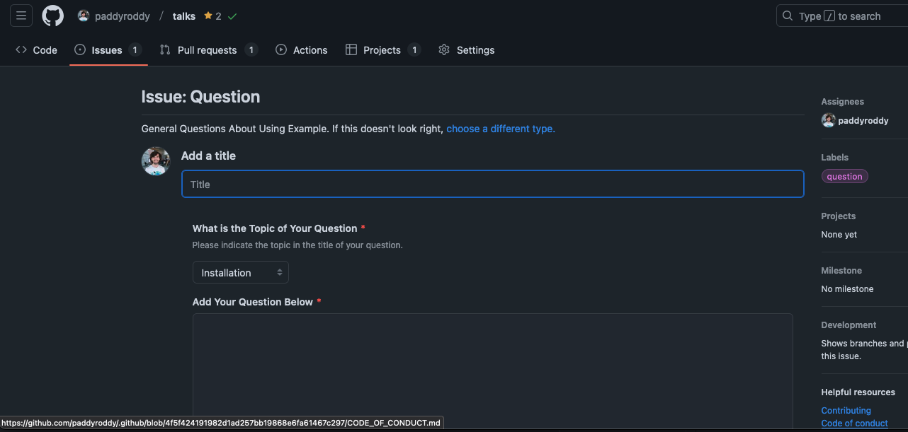
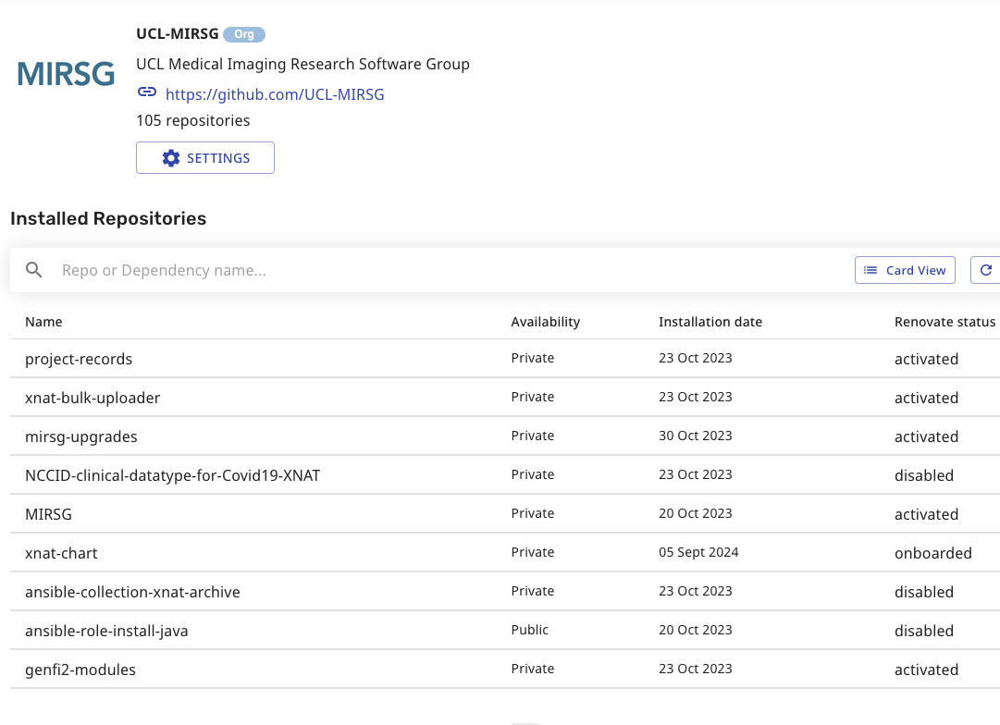

Turbocharging Your GitHub Organisation
2024-12-12
Much of this talk holds true for personal GitHub accounts and GitHub organisations. However, it is not always the case. The focus here is solely on organisational accounts.
Profile
Pinned Repositories
Pin the repositories you want people to see.
Discussions
Organisation-wide discussions, rather than project specific.
Projects
A project is an adaptable spreadsheet, task-board, and road map that integrates with your issues and pull requests on GitHub to help you plan and track your work effectively. You can create and customise many views by filtering, sorting, grouping your issues and pull requests, visualise work with configurable charts, and add custom fields to track metadata specific to your team. Rather than enforcing a specific method, a project provides flexible features you can customise to your team’s needs and processes.
Projects
Projects can be repository specific or organisation-wide.
Labels
Set the labels that will be included when a new repository is created in this organisation.
GitHub Runners
A self-hosted runner is a system that you deploy and manage to start jobs from GitHub Actions on GitHub.
Special Repositories
ORGANISATION.github.io
Can have a GitHub Pages per organisation and repository, e.g. UCL-ARC/ucl-arc.github.io.
.github-private
The /profile/README.md will appear on the GitHub organisation’s member profile, visible only to organisation members.
.github
The /profile/README.md will appear on the organisation’s profile.
.github
Can add issue templates in /.github/ISSUE_TEMPLATE that will be seen in all organisation repositories, unless the repository itself specifies its own set of issue templates.
.github
Configure /.github/ISSUE_TEMPLATE/config.yml.
.github
Add a default /CONTRIBUTING.md.
.github
Add a default /CODE_OF_CONDUCT.md.

Tools
Renovate
Renovate
Organisation-wide Renovate configuration, e.g. /renovate/default-config.json. UCL-ARC/.github:
{
"$schema": "https://docs.renovatebot.com/renovate-schema.json",
"extends": [
"config:best-practices",
"schedule:automergeWeekdays",
"schedule:monthly",
":automergeBranch",
":disableDependencyDashboard",
":enablePreCommit",
":label(renovate)",
":prHourlyLimitNone"
],
"commitMessageAction": "Renovate:",
"packageRules": [
{
"description": "Automatically merge, minor and patch-level updates",
"automerge": true,
"matchManagers": [
"dockerfile",
"github-actions",
"pre-commit",
"terraform"
],
"matchUpdateTypes": ["digest", "minor", "patch"]
},
{
"description": "Shorten commit titles",
"commitMessageTopic": "{{depName}}",
"matchManagers": ["github-actions", "pre-commit"]
},
{
"description": "Combine action artefact updates together",
"groupName": "artefacts",
"matchDepNames": [
"actions/deploy-pages",
"actions/download-artifact",
"actions/upload-artifact",
"actions/upload-pages-artifact"
]
},
{
"description": "Only allow major updates",
"enabled": false,
"matchDepNames": ["renovatebot/pre-commit-hooks"],
"matchUpdateTypes": ["minor", "patch", "pin"]
},
{
"description": "Support loose versioning",
"matchDepNames": [
"cmhughes/latexindent.pl",
"shellcheck-py/shellcheck-py"
],
"versioning": "loose"
}
]
}Renovate
This can be then be used in organisation repositories as follows, e.g. /.renovaterc.json5.
Renovate
This can then be debugged at https://developer.mend.io.

pre-commit
Metahooks pre-commit/pre-commit#731?
Your usecase tends not to work in practice. In many ways, pre-commit was designed as a reaction to centralised managed hooks. That said, there are some features that enable this to work currently.
…
That said, here is how you can do this with the facilities provided today:
pre-commit
Organisation-wide pre-commit configuration, e.g. /precommit/mirsg-hooks.yaml. UCL-MIRSG/.github:
exclude: .crt$
repos:
- repo: https://github.com/adrienverge/yamllint
rev: v1.35.1
hooks:
- id: yamllint
args:
- >-
--config-data={
extends: default,
rules: {
anchors: enable,
braces: {
forbid: non-empty
},
brackets: {
forbid: non-empty
},
colons: enable,
commas: enable,
comments: {
min-spaces-from-content: 1
},
comments-indentation: enable,
document-end: disable,
document-start: enable,
empty-lines: enable,
empty-values: disable,
float-values: enable,
hyphens: enable,
indentation: enable,
key-duplicates: enable,
key-ordering: disable,
line-length: {
max: 160
},
new-line-at-end-of-file: enable,
new-lines: enable,
octal-values: enable,
quoted-strings: {
quote-type: double,
required: only-when-needed
},
trailing-spaces: enable,
truthy: {
check-keys: false
}
}
}
- repo: https://github.com/AleksaC/hadolint-py
rev: v2.12.1b3
hooks:
- id: hadolint
args:
- --ignore=DL3008
- repo: https://github.com/ansible-community/ansible-lint.git
rev: v24.10.0
hooks:
- id: ansible-lint
args:
- --exclude=.github
- --exclude=docker-compose.yml
- repo: https://github.com/astral-sh/ruff-pre-commit
rev: v0.8.1
hooks:
- id: ruff
args:
- --exit-non-zero-on-fix
- --fix
- id: ruff-format
- repo: https://github.com/crate-ci/typos
rev: v1.28.1
hooks:
- id: typos
args:
- --force-exclude
- --hidden
- repo: https://github.com/igorshubovych/markdownlint-cli
rev: v0.43.0
hooks:
- id: markdownlint-fix
args:
- --dot
- repo: https://github.com/Lucas-C/pre-commit-hooks
rev: v1.5.5
hooks:
- id: forbid-tabs
- repo: https://github.com/pappasam/toml-sort
rev: v0.24.2
hooks:
- id: toml-sort-fix
args:
- --all
- --in-place
- --spaces-indent-inline-array=4
- --trailing-comma-inline-array
- repo: https://github.com/pre-commit/mirrors-prettier
rev: v3.1.0
hooks:
- id: prettier
args:
- --prose-wrap=always
- --quote-props=as-needed
- repo: https://github.com/pre-commit/pre-commit-hooks
rev: v5.0.0
hooks:
- id: check-added-large-files
- id: check-case-conflict
- id: check-executables-have-shebangs
- id: check-merge-conflict
- id: check-shebang-scripts-are-executable
exclude: .j2$
- id: destroyed-symlinks
- id: end-of-file-fixer
- id: mixed-line-ending
args:
- --fix=lf
- id: trailing-whitespace
- repo: https://github.com/python-jsonschema/check-jsonschema
rev: 0.30.0
hooks:
- id: check-github-workflows
- repo: https://github.com/shellcheck-py/shellcheck-py
rev: v0.10.0.1
hooks:
- id: shellcheck
args:
- --external-sources
- --shell=bash
- repo: https://github.com/rhysd/actionlint
rev: v1.7.4
hooks:
- id: actionlintpre-commit
To set this up a /.pre-commit-hooks.yaml must be defined.
pre-commit
Which, in turn, calls the script, e.g. /precommit/run-mirsg-hooks.py.
#!/usr/bin/env python
import pathlib
import subprocess
import sys
HERE = pathlib.Path(__file__).resolve()
def main() -> int:
cfg = HERE.parent / "mirsg-hooks.yaml"
result = subprocess.run(
[
"pre-commit",
"run",
"--config",
f"{cfg}",
"--files",
]
+ sys.argv[1:],
check=False,
)
return result.returncode
if __name__ == "__main__":
exit(main())pre-commit
This can be then be used in organisation repositories as follows, e.g. /.pre-commit-config.yaml.
Composite Actions
Composite actions allows one to collect a series of workflow job steps into a single action which you can then run as a single job step in many workflows.
They can be placed anywhere, but why not cut down on the number of repositories and place them in the .github repositories?
Composite Actions
Example add to project action used in UCL-MIRSG/.github, e.g. /actions/add-to-project/action.yml.
name: Add Issues to Project
description: Add issues to the GitHub project board
inputs:
app-id:
description: Application ID
required: true
app-pem:
description: Application private key
required: true
project-url:
description: URL of the project board to add issues to
default: https://github.com/orgs/UCL-MIRSG/projects/3
runs:
using: composite
steps:
- name: Generate token
id: generate-token
uses: actions/create-github-app-token@v1
with:
app-id: ${{ inputs.app-id }}
private-key: ${{ inputs.app-pem }}
- name: Get project data
uses: actions/add-to-project@v1.0.2
with:
project-url: ${{ inputs.project-url }}
github-token: ${{ steps.generate-token.outputs.token }}Composite Actions
This can be then be used in organisation repositories as follows, e.g. /.github/workflows/manage-projects.yaml.
Composite Actions
Actions can use a single set of generated secrets to be used in all actions, e.g. APP_ID, APP_PEM.
GitHub Apps
All installed apps can be seen in the organisation’s settings.

GitHub Apps
It is possible to also create your own apps accessible either publicly or just for the internal organisation. The UCL-MIRSG/.github/actions/add-to-project use the MIRSG Project Automation Helper app to avoid attributing project board movements to an individual user.
github/safe-settings
What it Does
Safe-settings: an app to manage policy-as-code and apply repository settings across an organisation.
Safe-settingsis designed to run as a service listening for webhook events or as a scheduled job running on some regular cadence. It can also be triggered through GitHub Actions.
How to Enable
- Install the safe-settings-app.
- Create an
adminrepository, e.g. UCL-MIRSG/admin. - Configure the required settings, e.g.
/.github/settings.yml.
Webhook Events
- push
- repository.created
- branch_protection_rule
- repository.edited
- repository.renamed
- pull_request.opened, pull_request.reopened, check_suite.requested
- repository_ruleset
- member_change_events
- member’, team.added_to_repository, team.removed_from_repository, team.edited
- custom_property_values
Settings File
The settings files can be used to set the policies at the org, suborg or repo level.
The following can be configured:
- Repository settings
- Default branch
- Topics
- Custom properties
- Teams and permissions
- Collaborators and permissions
- Issue labels
- Milestones
- Branch protections
- Autolinks
- Repository name validation
- Rulesets
- Environments
Example Configuration
repository:
allow_auto_merge: true
allow_merge_commit: false
allow_rebase_merge: false
delete_branch_on_merge: true
has_discussions: false
has_downloads: false
has_wiki: false
squash_merge_commit_message: PR_BODY
squash_merge_commit_title: PR_TITLE
teams:
- name: mirsg
permission: admin
rulesets:
- name: Default
target: branch
enforcement: active
conditions:
ref_name:
include:
- ~DEFAULT_BRANCH
rules:
- type: deletion
- type: non_fast_forward # prevents force pushes
- name: Pull Requests
target: branch
enforcement: active
bypass_actors:
- actor_id: 2740 # Renovate Bot
actor_type: Integration
bypass_mode: always
conditions:
ref_name:
include:
- ~DEFAULT_BRANCH
rules:
- type: pull_request
parameters:
dismiss_stale_reviews_on_push: true
require_code_owner_review: false
require_last_push_approval: false
required_approving_review_count: 1
required_review_thread_resolution: falseOther Ideas

Turbocharging Your GitHub Organisation